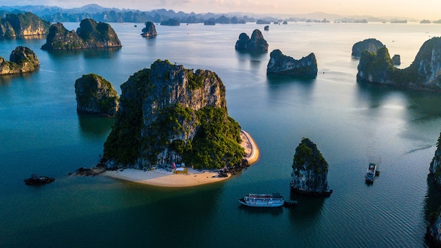

Ha Long Bay
Ha Long Bay is one of the most beautiful places in Vietnam and is recognized as one of the New Seven Wonders of Nature. It is famous for its emerald waters and thousands of towering limestone islands topped with rainforests.

Ha Long Bay is one of the most beautiful places in Vietnam and is recognized as one of the New Seven Wonders of Nature. It is famous for its emerald waters and thousands of towering limestone islands topped with rainforests.
